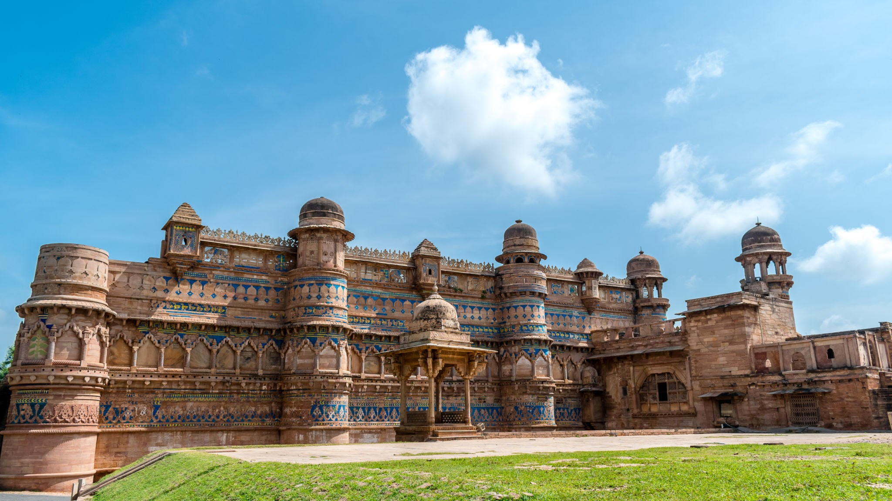
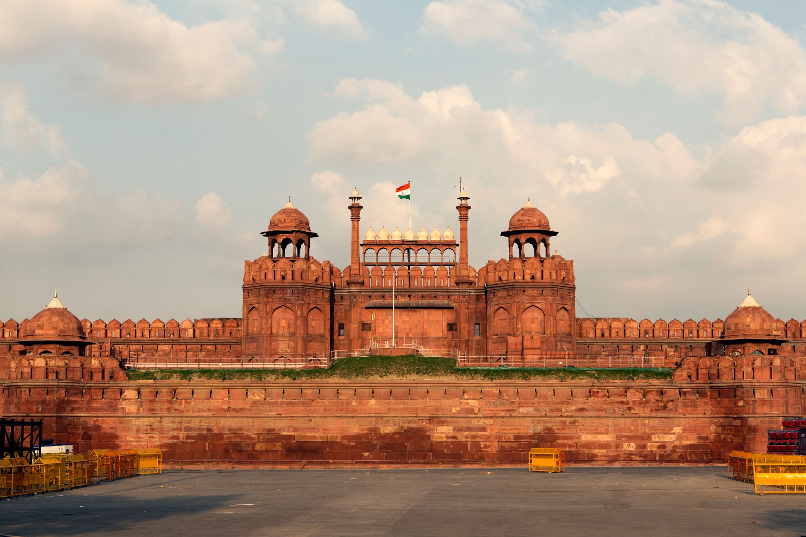
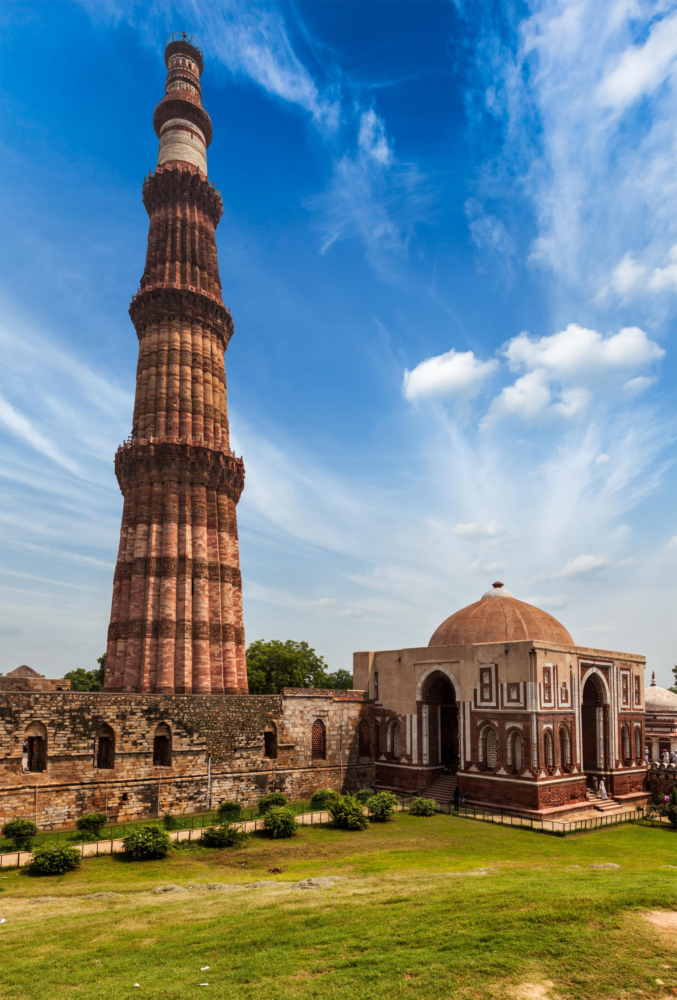
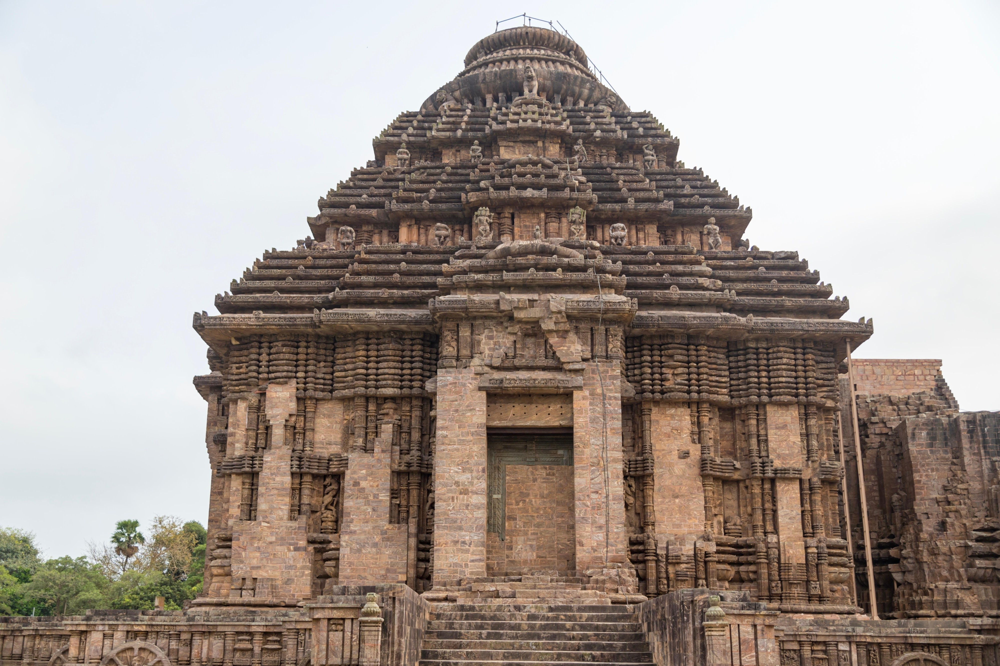
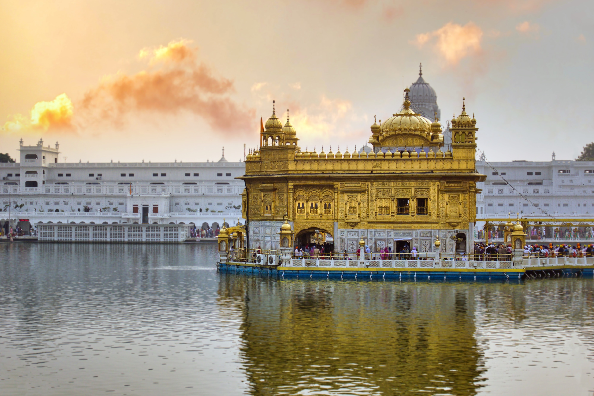
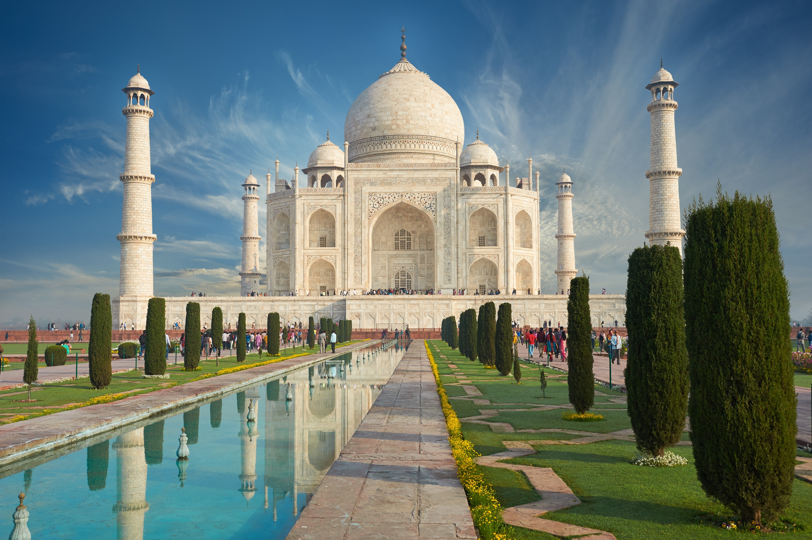
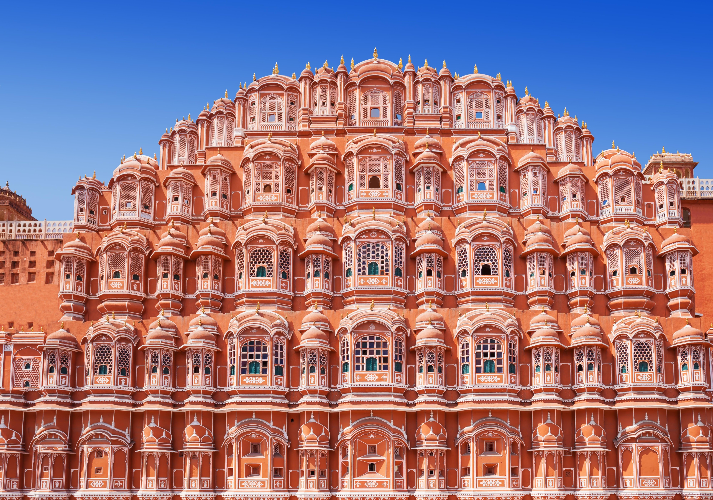

Gwalior fort—Gwalior
The Gwalior Fort commonly known as the Gwāliiyar Qila, is a hill
fort near Gwalior, Madhya Pradesh, India. The fort has existed at least since
the 10th century, and the inscriptions and monuments found within what is now
the fort campus indicate that it may have existed as early as the beginning of
the 6th century.
Sanchi stupa—Madhya Pradesh
Sanchi is a Buddhist complex, famous for its Great Stupa, on
a hilltop at Sanchi Town in Raisen District of Madhya Pradesh, India.

Red Fort—Delhi
The Red Fort or Lal Qila is a historic fort in Old Delhi, Delhi in India
that served as the main residence of the Mughal Emperors.

Qutub Minar—Delhi
The Qutb Minar is a minaret and "victory tower" that forms part of the Qutb complex.
Humayun Tomb—Delhi
Humayun's tomb is the tomb of the Mughal Emperor Humayun in Delhi, India.

Konark Temple—Odisha
Konark Sun Temple is a 13th-century CE Sun temple at Konark, Puri district, Odisha.
Mysore Palace—Karnataka
The Mysore Palace, also known as Amba Vilas Palace, is a historical palace and a royal residence in Mysore, Karnataka.
Golgumbaz—Karnataka
Gol Gumbaz is the tomb of Mohammed Adil Shah in Vijayapura. It is famous for its huge dome.

Golden Temple—Amritsar
The Golden Temple is famous for its full golden dome and is a sacred Sikh pilgrim spot.
Charminar—Hyderabad
The Charminar, constructed in 1591, is a globally recognized landmark of Hyderabad, Telangana.

Taj Mahal—Agra
Taj Mahal is an ivory-white marble mausoleum commissioned by Mughal emperor Shah Jahan in 1632.

Hawa Mahal—Jaipur
Hawa Mahal is a palace built from red and pink sandstone on the edge of the City Palace in Jaipur.